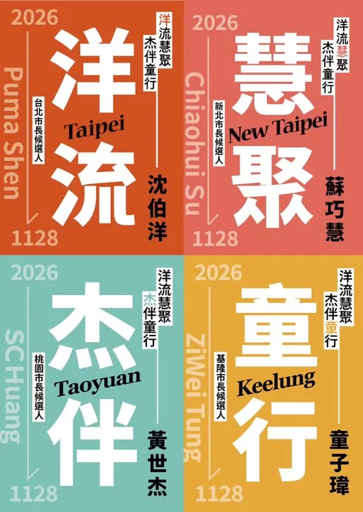
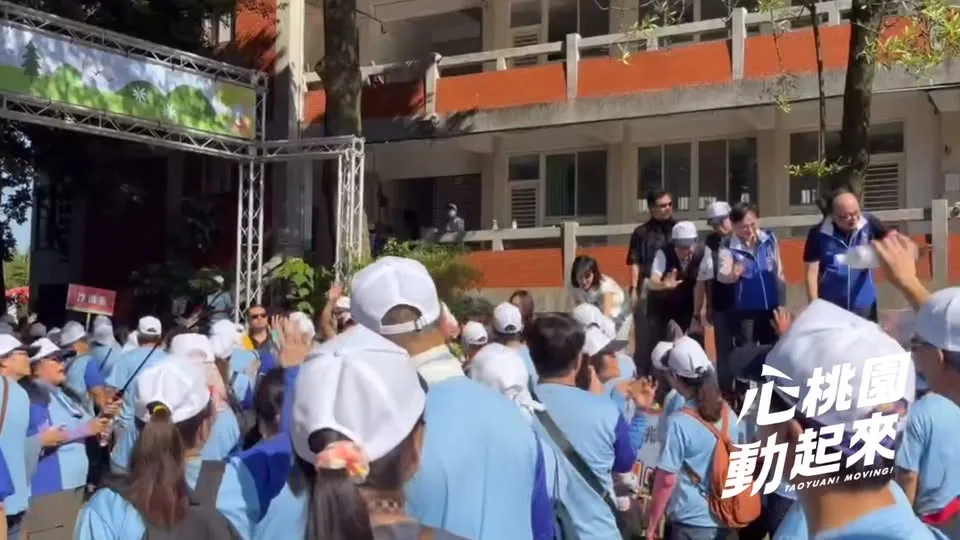
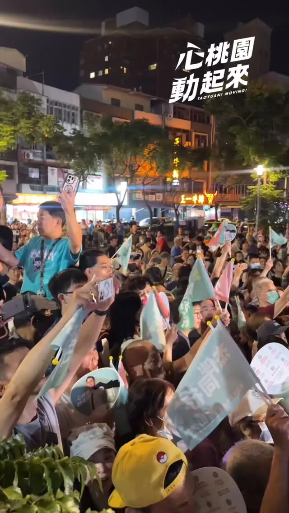
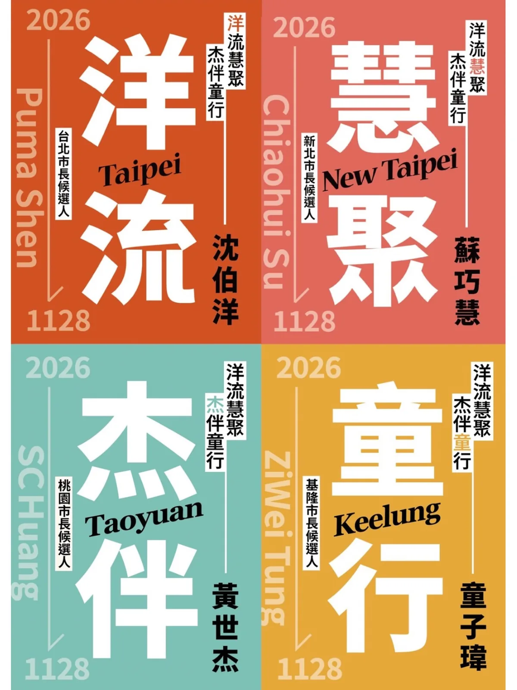
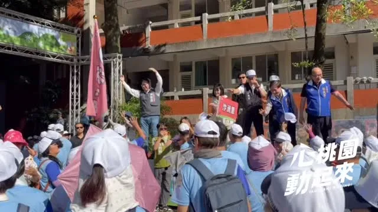
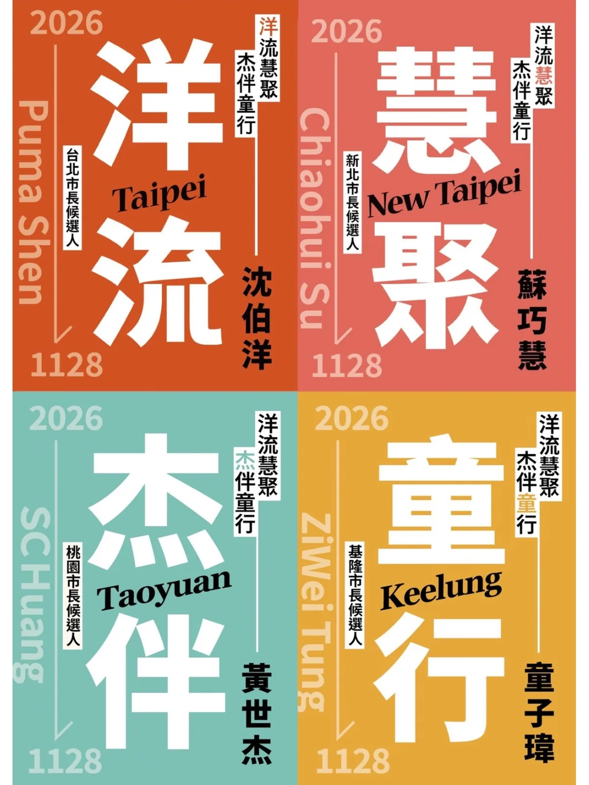

@schuanglawyer:開逛中壢夜市！每一攤都想吃！
Accounts
| 平台 | 帳號 | 已收錄貼文 | 最後更新 |
|---|---|---|---|
| https://www.facebook.com/SCHuangLawyer/ | 125 | 2026-09-19 20:29 | |
| https://www.instagram.com/schuanglawyer/ | 171 | 2026-09-20 12:43 | |
| Threads | https://www.threads.com/@schuanglawyer | 212 | 2026-09-20 22:13 |
Timeline
顯示 512 / 512 則
@schuanglawyer:開逛中壢夜市！每一攤都想吃！
@schuanglawyer:【杰伴踅夜市 ft. 沈伯洋 .ᐟ 集合點更新】 剛剛跑行程，有市民朋友跟我說晚上還要再見，大家都非常期待🤩 ‼️請大家互相提醒，晚上集合點更新‼️ 今晚我們在「新明國小附幼前」（新明路、明德路轉角）相見，小心不要跑錯囉～
昨天滿滿的中秋活動，今天繼續！

【9/20 洋流 X 杰伴 逛夜市！限量「四城市長卡」首發】 就在明天！台北市長候選人台北 沈伯洋委員，要到中壢合體了！ 現場將限量發送300份「四城市長卡」，讓大家搶先收集簽名✏️ 接下來，會陸續邀請新北市長候選人蘇巧慧委員、基隆市長候選人童子瑋議長，一起同遊桃園，讓大家珍藏北北桃基「洋流慧聚，杰伴童行」完整版簽名✨ 數量有限、發完為止！明天20:15記得準時來逛中壢夜市！

人好多！大家有在畫面裡看到我嗎？ 今天一早到桃園，跟健走的好朋友打招呼👋這幾個月持續勤跑，持續跟市民朋友近距離互動，緊握每一雙手！ 「最近已經看到你好幾次，桃園就是需要有活力、勤跑基層的市長！」 世杰會全力以赴，推動家鄉進步，請大家跟我一起打造活力心桃園💖

世杰挺青年！青年好發展，城市更有力🌱 今天舉辦第一次青年願景座談會，邀請在地青年寫下對桃園的願景。 非常感謝一路同行，同樣關心青年發展的桃園隊夥黃瓊慧 桃園觀察日記議員、余信憲議員、許家睿 Hsu Chia-Jui議員、陳雅倫 龜山達倫議員、市議員許清順-關心地方大小事議員、項柏翰 楊梅新選項議員候選人、謝卓儒議員候選人，一起來傾聽年輕的聲音。 大家的提問與交流都非常直接且深刻，幸好沒有被考倒！從居住、交通、公園，到觀光、原鄉地區照顧等問題。這些最真實的感受，就是未來施政、回應時代的重要方向。 市府會成為青年實現理想的重要助力，讓年輕人放膽發揮、勇敢追夢。無論是就業、創業、身心發展，甚至是前瞻的算力資源，我們要全面兼顧，為年輕世代打造更好的舞台。未來只要想到「桃園」，就是放心打拚、安心生活的關鍵字💪 杰伴小隊也在今天正式成立。心桃園，好青年！我們一起杰伴同行，讓夢想實踐💖 🎁 推出青年入職大禮包 ✅整合青年福利一站服務，主動推播適用資源 從社福措施、租金補貼、職訓課程到交通優惠，資訊一站整合，福利主動推播 ✅推動成年權益指南 聚焦於「年輕人必備的生存工具」，包括基礎報稅實務教學、勞動權益防身術及防詐騙法律常識 ✅設立跨局處青年權益諮詢專區 在青年局、各區公所設立服務窗口，提供免費法律、稅務諮詢，當青年最強法律後盾 🫶心理諮商「3+3」 ✅中央補助3次 桃園再加碼3次 桃園15–45歲青壯世代 ，中央方案諮商3次後，經專業評估仍有需求，再全額補助3次個別心理諮商 ✅拓展特約心理諮商機構與多元模式 擴大與桃園在地心理諮商所、臨床心理師公會、綜合醫院精神科的合作網絡，並導入「遠距通訊心理諮商」機制 🌱實習接軌 在地產業 ✅鼓勵企業提供實習市府把關品質 強化在地產業連結，鼓勵企業投入，產官學攜手為青年搭建舞台，把關實習機會，接軌未來。 ✅實習轉正享「青年就業讚」獎勵 參與實習並在相同企業轉正，享有就職3個月9,000元，滿6個月12,000元的獎勵金 ✅實習通勤經費 市府幫你出 實習期間通勤費用依照距離提供最高2,000元交通補助 ✨青年圓夢計劃 ✅圓夢加速器：推出桃園專屬的圓夢方案，將擴大對象族群，納入特殊領域學生 💰建立「AI算力共享平台」 ✅桃園AI算力有補助 提供「算力券」或「彈性租用點數」，助青年取得算力資源
🌊洋流來襲 杰伴同行🤝 我的家族學弟撲馬、台北市長台北 沈伯洋候選人，要來逛我從小就很熟悉的中壢夜市，大家週日見！ 🔺時間｜9/20（日）20:15 🔺集合｜大舊社市民活動中心（中壢區新明路223號）
桃園是充滿年輕活力的城市，今天第一次站路口，特別邀請了國務青夥伴，由年輕朋友推薦積極、專業、有衝勁的桃園隊，杰伴力挺世杰跟所有議員候選人✨ 這幾年，許多年輕朋友懷抱著憧憬，選擇在桃園成家立業，但大家最深刻的感受卻是發展停滯、建設牛步，口號卻喊得漫天響。 「你一定要當選，桃園這幾年都沒有進步！」 桃園人的心聲，需要被真正在乎桃園的市長來聽見。大家最關心的交通、居住、就業、育兒、教育，以及各區發展是否均衡，都是世杰放在心上、全力以赴的大事。 感謝所有對我們比讚、為我們加油的市民朋友，甚至還有支持者熱情地請我把名字簽在衣服上。大家的鼓勵跟心意，都是我們繼續向前的動力！ 家鄉要進步，桃園隊來顧！ 11/28，我們一起讓心桃園 動起來💖 黃瓊慧 桃園觀察日記議員、余信憲議員、李光達議員（桃園區）議員、桃園媽媽-李柏瑟議員候選人 民進黨青年部
@schuanglawyer:明天一早，我跟桃園隊的夥伴，會在市民的上課上班路上，杰伴跟大家問好！ 歡迎經過的市民朋友跟我們打招呼喔👋 🔺時間｜9/18（五）07:30 🔺地點｜桃園區 民族公園前（永安路、三民路口對面）
@schuanglawyer:今天從中壢華勛市場到八德公有市場，走進大家每天採買、吃早餐、話家常的地方，也聽見許多最貼近生活的聲音！ 一早來到華勛市場，沿路和攤商、買菜的鄉親打招呼，收到好多特別的祝福。有人送來鳳梨、粽子、蒜頭，還有可愛的蒜頭吊飾，甚至有支持者特別帶著「杰伴童行」貼紙來合照，大家的熱情讓一早的掃街行程活力滿滿🫶🏻 接著來到八德公有市場，感受市場與周邊居民緊密相連的生活日常。收到鄉親送來蘿蔔和竹筍祝福，結束後我們到在地超過30年的「50巷麵店」，邊吃麵邊聊地方事，來場最在地的早餐聚會。遇到很多市民朋友，大家都是巷仔內的！ 中壢、八德快速發展，人口持續移入，交通問題是居民的日常，捷運建設要如期如質、資訊公開透明，未來我也要把周邊道路、大眾運輸路網規劃好，讓建設真正接上市民每天的生活。大家關心的垃圾費隨袋徵收，在取得充分共識前，我也承諾停止推動。 心中壢、心八德，杰伴動起來💖

@schuanglawyer:世杰跟沈伯洋 @pumashen 、張惇涵 @changtunhan 、桃園隊議員們，在中壢夜市杰伴同行！心桃園 動起來💖
【杰伴踅夜市 ft. 沈伯洋 .ᐟ 集合點更新】 剛剛跑行程，有市民朋友跟我說晚上還要再見，大家都非常期待🤩 ‼️請大家互相提醒，晚上集合點更新‼️ 今晚我們在「新明國小附幼前」（新明路、明德路轉角）相見，小心不要跑錯囉～

@schuanglawyer:【9/20 洋流 X 杰伴 逛夜市！限量「四城市長卡」首發】 就在明天！台北市長候選人沈伯洋委員 @pumashen ，要到中壢合體了！ 現場將限量發送300份「四城市長卡」，讓大家搶先收集簽名✏️ 接下來，會陸續邀請新北市長候選人蘇巧慧委員 @su.chiaohui 、基隆市長候選人童子瑋議長 @tungtung_keelung ，一起同遊桃園，讓大家珍藏北北桃基「洋流慧聚，杰伴童行」完整版簽名✨ 數量有限、發完為止！明天20:15記得準時來逛中壢夜市！

@schuanglawyer:人好多！大家有在畫面裡看到我嗎？ 今天一早到桃園，跟健走的好朋友打招呼👋這幾個月持續勤跑，持續跟市民朋友近距離互動，緊握每一雙手！ 「最近已經看到你好幾次，桃園就是需要有活力、勤跑基層的市長！」 世杰會全力以赴，推動家鄉進步，請大家跟我一起打造活力心桃園💖
@schuanglawyer:世杰挺青年！青年好發展，城市更有力🌱 今天舉辦第一次青年願景座談會，邀請在地青年寫下對桃園的願景。 大家的提問與交流都非常直接且深刻，幸好沒有被考倒！從居住、交通、公園，到觀光、原鄉地區照顧等問題。這些最真實的感受，就是未來施政、回應時代的重要方向。 市府會成為青年實現理想的重要助力，讓年輕人放膽發揮、勇敢追夢。無論是就業、創業、身心發展，甚至是前瞻的算力資源，我們要全面兼顧，為年輕世代打造更好的舞台。未來只要想到「桃園」，就是放心打拚、安心生活的關鍵字💪 杰伴小隊也在今天正式成立。心桃園，好青年！我們一起杰伴同行，讓夢想實踐💖
@schuanglawyer:🌊洋流來襲 杰伴同行🤝 我的家族學弟撲馬、台北市長候選人沈伯洋 @pumashen ，要來逛我從小就很熟悉的中壢夜市，大家週日見！ 🔺時間｜9/20（日）20:15 🔺集合｜大舊社市民活動中心（中壢區新明路223號）
@schuanglawyer:桃園是充滿年輕活力的城市，今天第一次站路口，特別邀請了國務青夥伴，由年輕朋友推薦積極、專業、有衝勁的桃園隊，杰伴力挺世杰跟所有議員候選人✨ 這幾年，許多年輕朋友懷抱著憧憬，選擇在桃園成家立業，但大家最深刻的感受卻是發展停滯、建設牛步，口號卻喊得漫天響。 「你一定要當選，桃園這幾年都沒有進步！」 桃園人的心聲，需要被真正在乎桃園的市長來聽見。大家最關心的交通、居住、就業、育兒、教育，以及各區發展是否均衡，都是世杰放在心上、全力以赴的大事。 感謝所有對我們比讚、為我們加油的市民朋友，甚至還有支持者熱情地請我把名字簽在衣服上。大家的鼓勵跟心意，都是我們繼續向前的動力！ 家鄉要進步，桃園隊來顧！ 11/28，我們一起讓心桃園 動起來💖
@schuanglawyer:桃園的市民朋友早安☀️ 我正在民族公園前，跟大家揮手問好！
明天一早，我跟桃園隊的夥伴，會在市民的上課上班路上，杰伴跟大家問好！ 歡迎經過的市民朋友跟我們打招呼喔👋 🔺時間｜9/18（五）07:30 🔺地點｜桃園區 民族公園前（永安路、三民路口對面）
今天從中壢華勛市場到八德公有市場，走進大家每天採買、吃早餐、話家常的地方，也聽見許多最貼近生活的聲音！ 一早來到華勛市場，沿路和攤商、買菜的鄉親打招呼，收到好多特別的祝福。有人送來鳳梨、粽子、蒜頭，還有可愛的蒜頭吊飾，甚至有支持者特別帶著「杰伴童行」貼紙來合照，大家的熱情讓一早的掃街行程活力滿滿🫶🏻 接著來到八德公有市場，感受市場與周邊居民緊密相連的生活日常。收到鄉親送來蘿蔔和竹筍祝福，結束後我們到在地超過30年的「50巷麵店」，邊吃麵邊聊地方事，來場最在地的早餐聚會。遇到很多市民朋友，大家都是巷仔內的！ 中壢、八德快速發展，人口持續移入，交通問題是居民的日常，捷運建設要如期如質、資訊公開透明，未來我也要把周邊道路、大眾運輸路網規劃好，讓建設真正接上市民每天的生活。大家關心的垃圾費隨袋徵收，在取得充分共識前，我也承諾停止推動。 感謝張曉昀議員 @vina.lovezhongli 、魏筠議員 @weiyunin 、彭俊豪議員 @c_peng 、黃崇真議員 @cchuang_0223 ，八德許家睿議員 @cjcheerup 、市議員呂林小鳳議員 @siaofonglin 、蔡永芳 議員候選人服務團隊 @tw33462 、福興里姚成達里長、瑞豐里呂學琪里長，以及八德公有零售市場自治會邱秋珍會長一起同行。 心中壢、心八德，杰伴動起來💖
@schuanglawyer:我快到了！！！
@schuanglawyer:昨天滿滿的中秋活動，今天繼續！

【9/20 洋流 X 杰伴 逛夜市！限量「四城市長卡」首發】 就在明天！台北市長候選人沈伯洋委員 @pumashen ，要到中壢合體了！ 現場將限量發送300份「四城市長卡」，讓大家搶先收集簽名✏️ 接下來，會陸續邀請新北市長候選人蘇巧慧委員 @su.chiaohui 、基隆市長候選人童子瑋議長 @tungtung_keelung ，一起同遊桃園，讓大家珍藏北北桃基「洋流慧聚，杰伴童行」完整版簽名✨ 數量有限、發完為止！明天20:15記得準時來逛中壢夜市！
人好多！大家有在畫面裡看到我嗎？ 今天一早到桃園，跟健走的好朋友打招呼👋這幾個月持續勤跑，持續跟市民朋友近距離互動，緊握每一雙手！ 「最近已經看到你好幾次，桃園就是需要有活力、勤跑基層的市長！」 世杰會全力以赴，推動家鄉進步，請大家跟我一起打造活力心桃園💖

世杰挺青年！青年好發展，城市更有力🌱 今天舉辦第一次青年願景座談會，邀請在地青年寫下對桃園的願景。 非常感謝一路同行，同樣關心青年發展的桃園隊夥伴黃瓊慧議員 @qn_taiwan 、余信憲議員 @yu.councilor 、許家睿議員 @cjcheerup 、陳雅倫議員 @yalunchenyalunchen 、許清順議員 @scs3242288 、項柏翰議員候選人 @bigelephant.bro 、謝卓儒議員候選人 @choju_hsieh ，一起來傾聽年輕的聲音。 大家的提問與交流都非常直接且深刻，幸好沒有被考倒！從居住、交通、公園，到觀光、原鄉地區照顧等問題。這些最真實的感受，就是未來施政、回應時代的重要方向。 市府會成為青年實現理想的重要助力，讓年輕人放膽發揮、勇敢追夢。無論是就業、創業、身心發展，甚至是前瞻的算力資源，我們要全面兼顧，為年輕世代打造更好的舞台。未來只要想到「桃園」，就是放心打拚、安心生活的關鍵字💪 杰伴小隊也在今天正式成立。心桃園，好青年！我們一起杰伴同行，讓夢想實踐💖 🎁 推出青年入職大禮包 ✅整合青年福利一站服務，主動推播適用資源 從社福措施、租金補貼、職訓課程到交通優惠，資訊一站整合，福利主動推播 ✅推動成年權益指南 聚焦於「年輕人必備的生存工具」，包括基礎報稅實務教學、勞動權益防身術及防詐騙法律常識 ✅設立跨局處青年權益諮詢專區 在青年局、各區公所設立服務窗口，提供免費法律、稅務諮詢，當青年最強法律後盾 🫶心理諮商「3+3」 ✅中央補助3次 桃園再加碼3次 桃園15–45歲青壯世代 ，中央方案諮商3次後，經專業評估仍有需求，再全額補助3次個別心理諮商 ✅拓展特約心理諮商機構與多元模式 擴大與桃園在地心理諮商所、臨床心理師公會、綜合醫院精神科的合作網絡，並導入「遠距通訊心理諮商」機制 🌱實習接軌 在地產業 ✅鼓勵企業提供實習市府把關品質 強化在地產業連結，鼓勵企業投入，產官學攜手為青年搭建舞台，把關實習機會，接軌未來。 ✅實習轉正享「青年就業讚」獎勵 參與實習並在相同企業轉正，享有就職3個月9,000元，滿6個月12,000元的獎勵金 ✅實習通勤經費 市府幫你出 實習期間通勤費用依照距離提供最高2,000元交通補助 ✨青年圓夢計劃 ✅圓夢加速器：推出桃園專屬的圓夢方案，將擴大對象族群，納入特殊領域學生 💰建立「AI算力共享平台」 ✅桃園AI算力有補助 提供「算力券」或「彈性租用點數」，助青年取得算力資源
🌊洋流來襲 杰伴同行🤝 我的家族學弟撲馬、台北市長候選人沈伯洋 @pumashen ，要來逛我從小就很熟悉的中壢夜市，大家週日見！ 🔺時間｜9/20（日）20:15 🔺集合｜大舊社市民活動中心（中壢區新明路223號）
桃園是充滿年輕活力的城市，今天第一次站路口，特別邀請了國務青夥伴，由年輕朋友推薦積極、專業、有衝勁的桃園隊，杰伴力挺世杰跟所有議員候選人✨ 這幾年，許多年輕朋友懷抱著憧憬，選擇在桃園成家立業，但大家最深刻的感受卻是發展停滯、建設牛步，口號卻喊得漫天響。 「你一定要當選，桃園這幾年都沒有進步！」 桃園人的心聲，需要被真正在乎桃園的市長來聽見。大家最關心的交通、居住、就業、育兒、教育，以及各區發展是否均衡，都是世杰放在心上、全力以赴的大事。 感謝所有對我們比讚、為我們加油的市民朋友，甚至還有支持者熱情地請我把名字簽在衣服上。大家的鼓勵跟心意，都是我們繼續向前的動力！ 家鄉要進步，桃園隊來顧！ 11/28，我們一起讓心桃園 動起來💖 黃瓊慧議員 @qn_taiwan 、余信憲議員 @yu.councilor 、李光達議員 @lee_kung_da 、李柏瑟議員候選人 @leeposhe_taoyuanmama 、 @youthdpp
桃園的市民朋友早安☀️ 我正在民族公園前，跟大家揮手問好！
明天一早，我跟桃園隊的夥伴，會在市民的上課上班路上，杰伴跟大家問好！ 歡迎經過的市民朋友跟我們打招呼喔👋 🔺時間｜9/18（五）07:30 🔺地點｜桃園區 民族公園前（永安路、三民路口對面）

今天從中壢華勛市場到八德公有市場，走進大家每天採買、吃早餐、話家常的地方，也聽見許多最貼近生活的聲音！ 一早來到華勛市場，沿路和攤商、買菜的鄉親打招呼，收到好多特別的祝福。有人送來鳳梨、粽子、蒜頭，還有可愛的蒜頭吊飾，甚至有支持者特別帶著「杰伴童行」貼紙來合照，大家的熱情讓一早的掃街行程活力滿滿🫶🏻 接著來到八德公有市場，感受市場與周邊居民緊密相連的生活日常。收到鄉親送來蘿蔔和竹筍祝福，結束後我們到在地超過30年的「50巷麵店」，邊吃麵邊聊地方事，來場最在地的早餐聚會。遇到很多市民朋友，大家都是巷仔內的！ 中壢、八德快速發展，人口持續移入，交通問題是居民的日常，捷運建設要如期如質、資訊公開透明，未來我也要把周邊道路、大眾運輸路網規劃好，讓建設真正接上市民每天的生活。大家關心的垃圾費隨袋徵收，在取得充分共識前，我也承諾停止推動。 感謝中壢中壢大姊姊張曉昀議員、魏筠議員、彭俊豪議員、黃崇真 Huang Chung-Chen議員，八德許家睿 Hsu Chia-Jui議員、市議員呂林小鳳議員、蔡永芳 • 阿芳議員候選人服務團隊、福興里姚成達里長、瑞豐里呂學琪里長，以及八德公有零售市場自治會邱秋珍會長一起同行。 心中壢、心八德，杰伴動起來💖